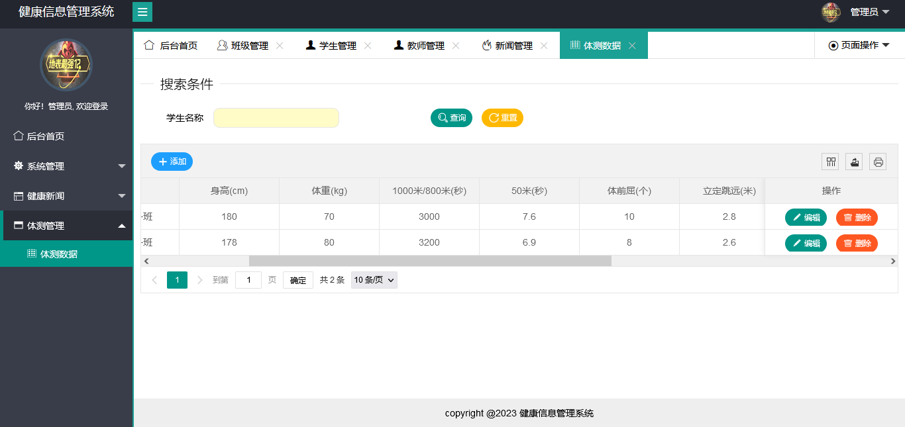
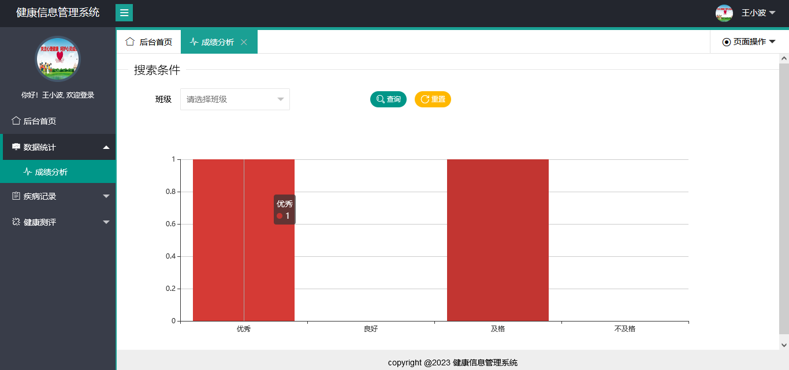
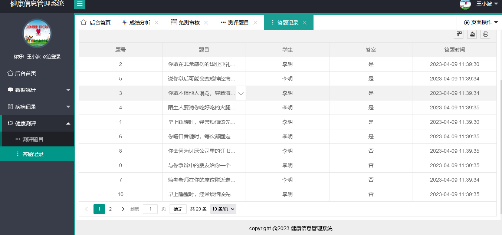
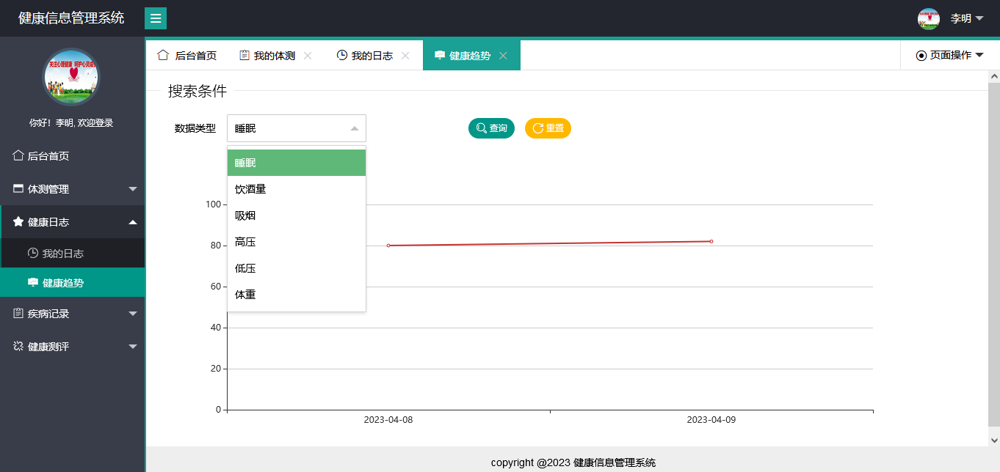
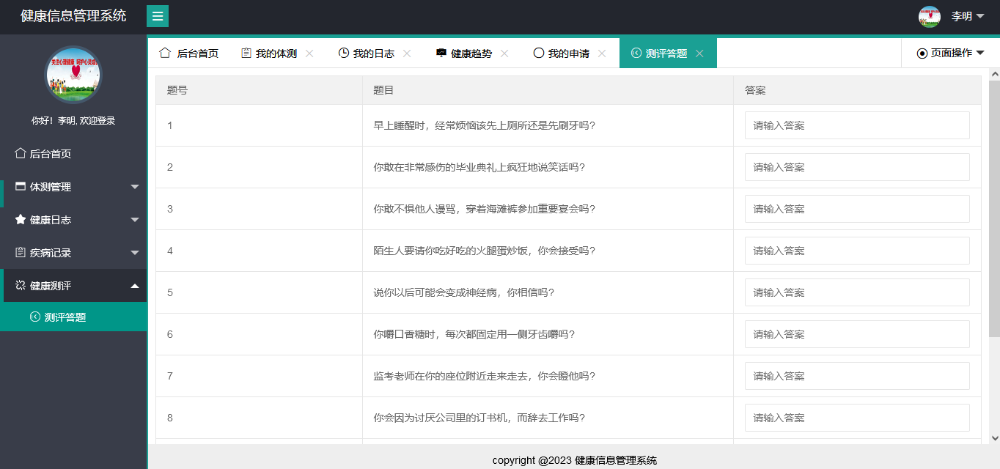

SpringBoot 大学生健康信息管理系统
一、项目介绍
180
大学生健康信息管理系统基于 SpringBoot+Mybatis 开发，系统分为管理员，教师，学生三种角色。
管理员功能如下：
-
班级管理
-
学生管理
-
教师管理
-
新闻管理
-
体测数据管理
教师：
学生：
-
我的体测成绩
-
健康日志
-
健康趋势分析
-
免测申请
-
测评答题
二、技术框架
-
后端：SpringBoot，Mybatis
-
前端：layui，echarts，jquery
三、安装教程
-
用 idea 打开项目
-
在 idea 中配置 jdk 环境
-
配置 maven 环境并下载依赖
-
新建数据库，导入数据库文件
-
在 application.yml 文件中将数据库账号密码改成自己本地的
-
系统的静态资源存储在 F 盘，如果你的电脑没有 F 盘，则需要改成其他盘，具体位置在 file.properties 和 FileConfig.java 两个文件，将文件里面的 F:/upload 改成你本地的即可。
-
启动运行，访问
http://localhost:8080
, 管理员账号密码 system/123456 ，教师账号密码 wxb/123456，学生账号密码 lm/123456
四、项目截图




